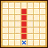

| Lv: | 140 |
|---|---|
| HP: | |
| MP: | |
| ATK: | |
| DEF: | |
| AGL: | |
| WIS: | |
| Move: | |
| Weight: | 60 |
| Weaknesses: |  |
 |
/ |  |
 |
|---|---|---|---|---|---|
| Resistances: |  |
 |
/ |  |
 |
| Immunities: |  |
| Abilities | ||||||
|---|---|---|---|---|---|---|
| Level | Type | Name | MP | Element | Range | Description |
| 1 |  |
天地のベール | 34 |  |
 1-2 (incl. self) |
Raises Spell and Breath Res of all allies in area of effect for 3 turns |
| 31 |  |
幻魔の術：れんごく火炎 | 133 |  |
 Front |
Deals major Frizz-type spell damage to all enemies in area of effect |
| 54 | |
幻魔の術：ビッグバン | 158 |  |
 Front |
Deals major unreflectable Bang-type spell damage to all enemies in area of effect |
| 54 |  |
幻魔の術：ジゴスパーク | 154 |  |
 Straight Line |
Deals major Zap-type spell damage to all enemies in area of effect, occasionally paralyses This attack cannot be redirected by abilities or perks such as Cover or Selflessness |
| 80 |  |
天地のいかり | 52 | |
 Self |
Grants the user x1.5 spell potency/recovery for 3 turns, raises Spell Boost for 2 turns Turns needed: 2 turns (Times usable: 2) |
| Base Perks | ||
|---|---|---|
| Level | Name | Description |
| 1 | Max MP +15 | Raises max MP by 15 |
| 1 | WIS +15 | Raises max WIS by 15 |
| 1 | 天地鳴動：業炎 | When any ally (incl. self) is attacked by enemy: Attacks with 業炎 if enemy is within 1 to 3-space range, up to 3 times per battle (業炎: Deals major unreflectable Frizz-type spell damage to 1 enemy) |
| 1 | 天地鳴動：爆砕 | When any ally (incl. self) is attacked by enemy: Attacks with 爆砕 if enemy is within 2 to 4-space range, up to 3 times per battle (爆砕: Deals major unreflectable Bang-type spell damage to 1 enemy) |
| 1 | 天地鳴動：雷鳴 | When any ally (incl. self) is attacked by enemy: Attacks with 雷鳴 if enemy is within 3-space range, up to 3 times per battle (雷鳴: Deals major unreflectable Zap-type spell damage to 1 enemy) |
| 110, 120, 130, 140 | Spell Potency/Recovery +2% | Raises spell potency/recovery by 2% |
| 110, 120, 130, 140 | 天地のいかり MP Cost -5% | Lowers 天地のいかり MP cost by 5% |
| Awakening Perks | ||
|---|---|---|
| Awakening | Name | Description |
| 1 | Druid | Action start until turn 5: Restores 8% of max MP and raises Spell Boost for 2 turns |
| 2 | Crack Res +25 | Raises Crack resistance by 25 |
| 3 | 天地の加護 | Heals 50% of max HP when the user's HP drops to 70% or less, 1 time per battle This perk can be triggered when the attack is from an ally |
| 3, 5 | Spell Potency/Recovery +5% | Raises spell potency/recovery by 5% |
| 3, 5 | 天地のいかり MP Cost -10% | Lowers 天地のいかり MP cost by 10% |
| 4 | Sizz Res +25 | Raises Sizz resistance by 25 |
| 5 | Instant Damage Barrier | Battle start: Grants a barrier that reduces damage taken by 15% for 3 turns |
| 1, 2, 3, 4, 5 | Stats Up | Raises HP, MP, ATK, DEF, WIS and AGL by 5% |